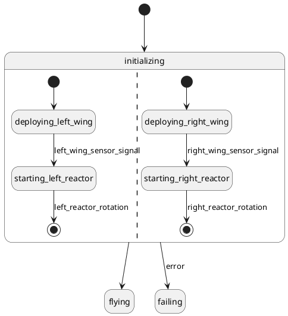

You can ask maki::machine to call hooks before or after the state machine executes a non-internal transition in a region.
These hooks are configured by calling overloads and variants of the following functions:
These hooks take the following arguments:
- ctx, the context of the state machine;
- region (of type const maki::region<...>&), the region where the transition is happening;
- source_state (of type const maki::state<...>&), the source state;
- target_state (of type const maki::state<...>&), the target state;
- event, the event that triggered the transition.
These hooks are particularly useful to log transitions. For example:
.pre_external_transition_hook_crste
(
[](context& , const auto& region, const auto& source_state, const auto& target_state, const auto& )
{
log_info
(
"Executing transition in ",
region.path().to_string(),
": ",
source_state.pretty_name(),
" -> ",
target_state.pretty_name(),
"..."
);
}
)
.post_external_transition_hook_crste
(
[](context& , const auto& region, const auto& source_state, const auto& target_state, const auto& )
{
log_info
(
"Executed transition in ",
region.path().to_string(),
": ",
source_state.pretty_name(),
" -> ",
target_state.pretty_name(),
"."
);
}
)
This is the kind of output you can obtain:
Executing transition in 0: -> initializing...
Executed transition in 0: -> initializing.
Executing transition in 0: initializing -> running...
Executed transition in 0: initializing -> running.
- Note
- In the output above, 0 is the path to the first topmost region of the state machine. Also, see Note: The Null Dummy State Object for an explanation about the empty state names.
Note: Transition Decomposition
When composite states are involved, a unique transition can trigger several invocations of the external transition hooks. This is due to the fact that external transition hooks see transitions from the point of view of every region.
Consider the state machine below, which defines the behavior of some kind of plane:

Whenever an error occurs while, say, the plane is starting its left reactor and deploying its right wing, the external transition hooks log the following messages:
Executing transition in 0: initializing -> failing...
Executing transition in 0/initializing/0: starting_left_reactor -> ...
Executed transition in 0/initializing/0: starting_left_reactor -> .
Executing transition in 0/initializing/1: deploying_right_wing -> ...
Executed transition in 0/initializing/1: deploying_right_wing -> .
Executed transition in 0: initializing -> failing.
- Note
- See Note: The Null Dummy State Object for an explanation about the empty state names.
From the point of view of the topmost region (path 0), a transition from initializing to failing occurs and triggers these subtransitions:
- from the point of view of the first region of initializing (path 0/initializing/0), a transition from starting_left_reactor to nothing;
- from the point of view of the second region of initializing (path 0/initializing/1), a transition from deploying_right_wing to nothing.
These transitions to nothing happen because, from the point of view of the parent region, the source state is exited but no target state is entered.
Note: The Null Dummy State Object
In some cases, the source_state and target_state parameters can be given maki::states::null, a dummy maki::state object whose pretty name is an empty string.
This dummy state is used to represent:
- the source state for transitions from pseudostates (such as the initial pseudostate);
- the target state for transitions that exit the region.
 1.14.0
1.14.0